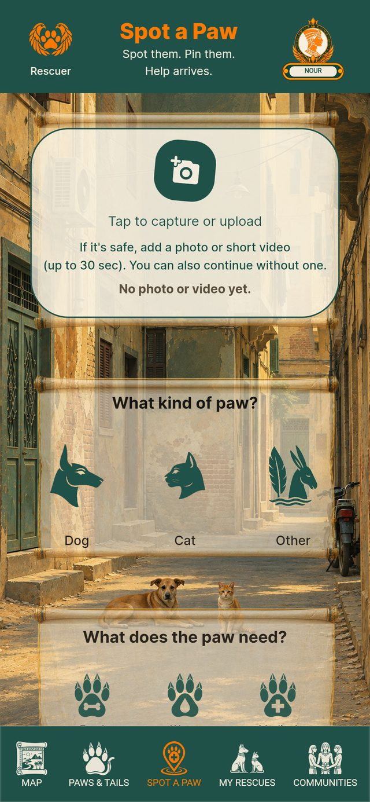

Spot and report
Reporting and finding animals
Create a report from a photo
Add a photo and AI suggests details about the animal and its visible needs. Review the draft, correct anything it missed and confirm the location before posting.
Check whether an animal has already been reported
Before your report is posted, the app looks for what may be the same animal reported nearby in the last three days. Check the photo and choose whether to help on that report or post your own.
Search in your own words
Describe the animal or situation you are looking for. Search can suggest related reports even when the wording differs. Check the photos and details to confirm a match.
